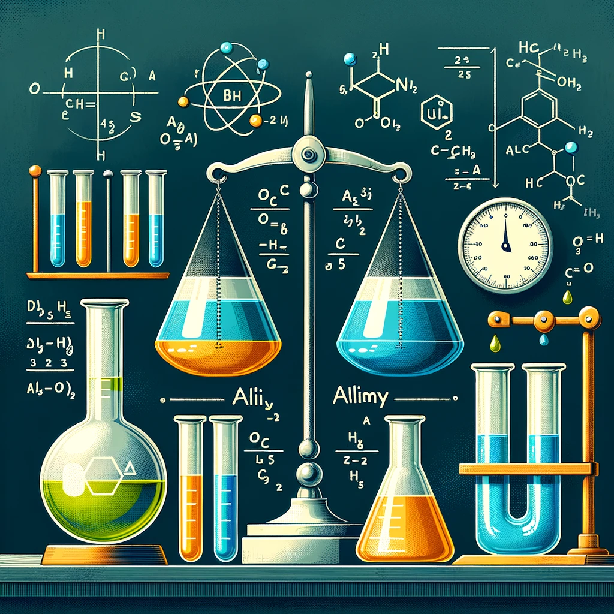

Задачи на сплавы, смеси и растворы решаются с использованием понятий массовой доли и балансового уравнения.
Массовая доля вещества в растворе, смеси или сплаве определяется по формуле:
ω = (mвещества / mраствора) × 100%
где:
Для решения задач на смеси и растворы используют закон сохранения массы:
mнач = mкон
Также применяется принцип сложения масс растворенного вещества:
mвещества 1 + mвещества 2 = mобщ